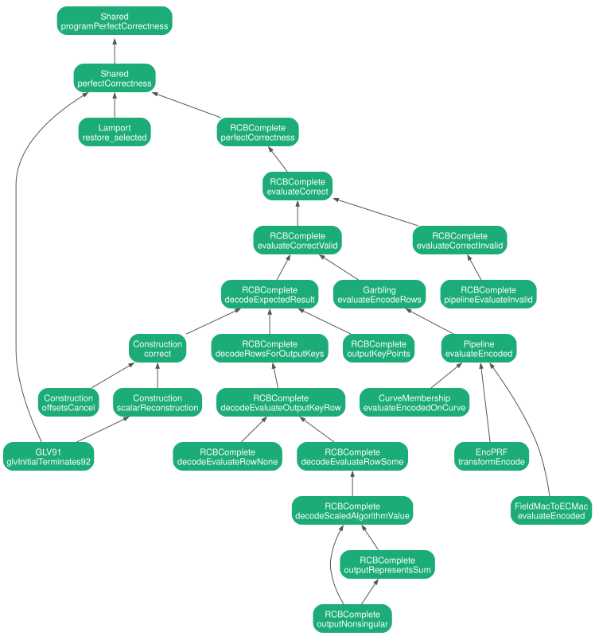

2 Perfect correctness
The root is theorem 9. For every secret scalar \(r\), every random tape, and every input \(\pi \), \(\mathsf{Eval}\) on the garbled circuit and the labels of \(\pi \) returns \(f[r](\pi )\) (Fig. 21). The proof follows the evaluation chain of the paper: the curve membership circuit \(C_4\) releases \(t\), \(\mathsf{Dec}_t\) recovers the labels \(L_3\), the garbled \(C_2\) returns the Jacobian coordinates of \(r_j \pi + K_j\), and \(\mathsf{Eval}_1\) sums them with the base-\((2-\omega )\) weights. Figure 2.1 shows the proof tree. An arrow points from a lemma to the result that uses it.

2.1 Statements from the paper
A garbling scheme \(\mathsf{GC} = (\mathsf{Garble}, \mathsf{Encode}, \mathsf{Eval})\) is correct if for every circuit \(C\) and every input \(x\):
Formalized by theorem 9.
The Verifier fixes a secret scalar \(r \in \mathbb {F}_{\mathbb {r}}^*\). The Prover supplies a public input point \(\pi \) through the bit decomposition \(\mathbf{b} = (x_0(\pi ), \ldots , x_{n-1}(\pi ), y_0(\pi ), \ldots , y_{n-1}(\pi ))\) of its affine coordinates, with \(n = 254\). The garbled function is
Formalized by theorem 13; the off-curve branch is theorem 14.
\(\mathsf{Garble}(C[r_0, \ldots , r_{\ell -1}])\) runs \(\mathsf{Garble}_1(C_1)\), \(\mathsf{Garble}_2(C_2[\mathsf{ek}_1])\), \(\mathsf{Garble}_3(C_3[\mathsf{ek}_2])\), samples \(t, w \gets \mathbb {F}_p\), runs \(\mathsf{Garble}_4(C_4[t, w])\) and \(\mathsf{Garble}_5(C_5[\mathsf{ek}_4])\), and returns \(\mathsf{ct}_{\mathsf{gc}} = (\mathsf{ct}_{\mathsf{gc},2}, \mathsf{ct}_{\mathsf{gc},3}, \mathsf{ct}_{\mathsf{gc},4}, \mathsf{ct}_{\mathsf{gc},5})\) and \(\mathsf{ek} = (\mathsf{ek}_3, t, \mathsf{ek}_5)\). \(\mathsf{Encode}(\mathsf{ek}, \mathbf{b})\) returns \(L = (\mathsf{Enc}_t(L_3), L_5)\) with \(L_3 = \mathsf{Encode}_3(\mathsf{ek}_3, \mathbf{b})\) and \(L_5 = \mathsf{Encode}_5(\mathsf{ek}_5, \mathbf{b})\). \(\mathsf{Eval}(\mathsf{ct}_{\mathsf{gc}}, L, \mathbf{b})\) computes \(L_4 \gets \mathsf{Eval}_5\), \(\hat t \gets \mathsf{Eval}_4(\mathsf{ct}_{\mathsf{gc},4}, L_4, x(\pi ), y(\pi ))\), \(L_3 \gets \mathsf{Dec}_{\hat t}(\mathsf{Enc}_t(L_3))\), \(L_2 \gets \mathsf{Eval}_3\), the Jacobian coordinates \((X, Y, Z)(r_j \pi + K_j)_{j} \gets \mathsf{Eval}_2(\mathsf{ct}_{\mathsf{gc},2}, L_2, x(\pi ), y(\pi ))\), converts them to affine points \(L_{1,j}\), and returns \(\mathsf{Eval}_1(\bot , L_1)\). The optimized scheme (Fig. 29) uses the base-\((2-\omega )\) digits \(r_j \in D\) with \(\ell = 92\) and merges the layers into \(\mathsf{GC}_{23}\) and \(\mathsf{GC}_{45}\). Formalized by ??.
\(C_1[r_0, \ldots , r_{\ell -1}](\pi ) = \sum _{j=0}^{\ell -1} (2-\omega )^j (r_j \pi )\). \(\mathsf{Garble}_1\) samples \(K_j \gets \mathbb {G}_1\) for \(j \geq 1\), sets \(K_0 = -\sum _{j \geq 1} (2-\omega )^j K_j\), and returns \(\mathsf{ct}_{\mathsf{gc},1} = \bot \) and \(\mathsf{ek}_1 = (r_0, \ldots , r_{\ell -1}, K_0, \ldots , K_{\ell -1})\). \(\mathsf{Encode}_1(\mathsf{ek}_1, \pi )\) returns \(L_1 = (L_{1,j})_j\) with \(L_{1,j} = r_j \pi + K_j\). \(\mathsf{Eval}_1(\bot , L_1) = \sum _{j=0}^{\ell -1} (2-\omega )^j L_{1,j}\). Formalized by ??.
For each digit \(j\) and coordinate \(W \in \{ X, Y, Z\} \), the Jacobian coordinate \(W(r_j \pi + K_j)\) is a quadratic function of \((x(\pi ), y(\pi ))\):
For a binary digit \(r_j\), an offset \(K_j = (x(K_j), y(K_j))\), a randomizer \(a_j \gets \mathbb {F}_p\), and \(B = 3\), the coefficients are
The base-\((2-\omega )\) implementation uses the adjusted coefficients of [ 1 , Eqs. 51–53 ] for digits \(r_j \in D\). \(\mathsf{Garble}_2\) applies the Ishai–Wee partial garbling: it samples masks \(\rho ^{(j,W)}_1, \ldots , \rho ^{(j,W)}_{10}\), sets \(\rho _0 = -\rho _9 - \rho _{10}\), and publishes \(c'_k = c_k + \rho _k\) for \(k \leq 5\). \(\mathsf{Encode}_2\) returns the labels \(c'_6, \ldots , c'_{10}\), which are affine in \(x(\pi )\) and \(y(\pi )\). \(\mathsf{Eval}_2\) returns \(c'_0 + c'_1 x + c'_2 y + c'_3 xy + c'_4 x^2 + c'_5 y^2 + c'_6 x + c'_7 x + c'_8 y + c'_9 + c'_{10} = W(r_j \pi + K_j)\). Formalized by ??.
\(C_4[t, w](x, y) = t + w\, (x^3 + 3 - y^2) = (t + 3w) + w\, x^3 - w\, y^2\) for \(t, w \gets \mathbb {F}_p\). The value \(t\) is released if and only if \(\pi \) is on the curve. \(\mathsf{Garble}_4\) applies the Ishai–Wee technique to the coefficients \((\hat c_0, \hat c_1, \hat c_2) = (t + 3w, w, -w)\) with masks \(\hat\rho _1, \ldots , \hat\rho _7\), and \(\mathsf{Eval}_4\) returns \(\hat c'_0 + \hat c'_1 x^3 + \hat c'_2 y^2 + \hat c'_3 x^2 + \hat c'_4 y + \hat c'_5 x + \hat c'_6 + \hat c'_7\). Formalized by theorem 19.
\((\mathsf{Enc}, \mathsf{Dec})\) is implemented with a PRF \(\mathsf{EncPRF}\) and a public counter: \(\mathsf{Enc}_t(m) = \mathsf{EncPRF}(t, \mathsf{counter}) \oplus m\) and \(\mathsf{Dec}_t(\mathsf{ct}) = \mathsf{EncPRF}(t, \mathsf{counter}) \oplus \mathsf{ct}\). \(\mathsf{EncPRF}(t, (w, i, b)) = \mathsf{P}_{w,i}(\mathsf{enc}(b) \oplus k_1) \oplus k_2\) with \(k_1 \| k_2 = \mathsf{SHA256}(t)\) is the two-key Even–Mansour construction, where each \(\mathsf{P}_{w,i}\) is a programmable random permutation. The labels of \(\mathsf{GC}_3\) are encrypted label by label: \(\hat L^b_{x,i} = \mathsf{Enc}_t(L^b_{x,i})\) and \(\hat L^b_{y,i} = \mathsf{Enc}_t(L^b_{y,i})\) (Eq. 33). If \(\mathsf{GC}_{45}\) is \(\epsilon _1\)-adaptively private, then the first two hybrids of the privacy proof differ by at most \(\epsilon _1 + \mathsf{negl}(\lambda )\). Formalized by theorem 20.
Let \(\omega \in \mathbb {F}_{\mathbb {r}}\) with \(\omega ^2 + \omega + 1 = 0\) and \(D = \{ 0, \pm 1, \pm \omega , \pm (1 + \omega )\} \). For every scalar \(r \in \{ 0, \ldots , \mathbb {r} - 1\} \), the GLV decomposition gives small integers \((a, b)\) with \(r \equiv a + \omega b \pmod{\mathbb {r}}\). Alg. 8 divides \(A + B\omega \) by \(2 - \omega \) repeatedly, with the digit \(r_i \in D\) chosen from \((A + 2B) \bmod 7\) and the exact division \(A' = (3A - B)/7\), \(B' = (A + 2B)/7\), and stops at \((A, B) = (0, 0)\) within \(\ell = 1 + \lceil \log _7 \mathbb {r} \rceil = 92\) iterations. The reconstruction \(\sum _{i=0}^{\ell -1} r_i (2-\omega )^i \equiv r \pmod{\mathbb {r}}\) holds. Multiplication by a digit in \(D\) is an endomorphism: \(\omega \pi = (\mu \, x(\pi ), y(\pi ))\) with \(\mu ^2 + \mu + 1 = 0\) in \(\mathbb {F}_p\), and \(-\pi = (x(\pi ), -y(\pi ))\). Formalized by ??.
2.2 Lean statements
2.2.1 Program and wire circuits
Fix \(r\), the tape, and \(\pi \). Apply theorem 10 to the tape whose public oracle is replaced by the oracle component of the tape. Unfold the program circuit, the wire circuit, and the label map. The two sides agree.
Fix \(r\), a coherent tape, and \(\pi \). Unfold the wire circuit and rewrite the evaluation oracle with the tape property. By theorem 11 the Lamport signature restores the bit labels \(L\). Conclude with theorem 12.
The wire adapter inverts the Lamport encoding. For every input \(\pi \) and every label vector \(L = \{ L^{x_i(\pi )}_{x,i}, L^{y_i(\pi )}_{y,i}\} _{i {\lt} 254}\), restoring \(L\) from its \(508\) Lamport signature slots returns the bits of \(\pi \) together with \(L\).
Compare the \(x\) and \(y\) label vectors index by index. For \(i {\lt} 254\) slot \(i\) holds \(L^{x_i(\pi )}_{x,i}\). For \(i \geq 254\) slot \(i\) holds \(L^{y_{i-254}(\pi )}_{y,i-254}\).
Perfect correctness of the garbled circuit of Fig. 21 for the fixed base-\((2-\omega )\) construction with \(\ell = 92\) digits. The random tape supplies the fixed-key permutations of \(\mathsf{CTPRF}\), the permutations of \(\mathsf{EncPRF}\), and the hash oracle.
Fix \(r\), the randomness, and \(\pi \). The claim is theorem 13 wrapped in some.
For every nonzero scalar \(r\), every randomness, and every input \(\pi \): \(\mathsf{Eval}(\mathsf{ct}_{\mathsf{gc}}, \mathsf{Encode}(\mathsf{ek}, \pi ), \pi ) = f[r](\pi )\), where \((\mathsf{ct}_{\mathsf{gc}}, \mathsf{ek}) = \mathsf{Garble}(C[r])\) (Fig. 21).
Split on whether \(\pi \) decodes to a point of \(\mathbb {G}_1\). The off-curve case is theorem 14. The on-curve case is theorem 16.
2.2.2 Invalid inputs
When \(\pi \) is not a point of \(\mathbb {G}_1\), \(\mathsf{Eval}\) returns \(f[r](\pi ) = 0\) (Eq. 27). The curve membership check \(C_4[t, w]\) (Fig. 17) does not release \(t\), so the labels \(L_3\) stay encrypted.
Unfold \(\mathsf{Eval}\). By theorem 15 the evaluation chain returns \(\bot \). The function \(f[r]\) also returns \(0\) for an off-curve input.
When \(\pi \) is not a point of \(\mathbb {G}_1\), the evaluation chain \(\mathsf{Eval}_5 \to \mathsf{Eval}_4 \to \mathsf{Dec}_{\hat t} \to \mathsf{Eval}_3 \to \mathsf{Eval}_2\) of Fig. 21 returns \(\bot \) for every \(\mathsf{ct}_{\mathsf{gc}}\) and every label vector \(L\).
Unfold the chain. The first step decodes \(\pi \) as a curve point and fails, so the chain returns \(\bot \).
2.2.3 Valid inputs
When \(\pi \) decodes to a point \(P \in \mathbb {G}_1\): \(\mathsf{Eval}(\mathsf{ct}_{\mathsf{gc}}, \mathsf{Encode}(\mathsf{ek}, \pi ), \pi ) = f[r](\pi ) = rP\).
Unfold \(\mathsf{Eval}\) into the evaluation chain followed by the decoder. By theorem 17 the chain returns the Jacobian coordinates of \(r_j \pi + K_j\) for all \(j\). The offsets \(K_j\) are clamped, so theorem 22 decodes these coordinates to \(rP\).
For an on-curve input \(\pi \) and the encoding key \(\mathsf{ek}\) of \(\mathsf{Garble}\), the evaluation chain of Fig. 21 applied to \(\mathsf{ct}_{\mathsf{gc}}\) and \(\mathsf{Encode}(\mathsf{ek}, \pi )\) returns the Jacobian coordinates \((X, Y, Z)(r_j \pi + K_j)\) of \(\mathsf{Eval}_2\) for all \(j \in \{ 0, \ldots , \ell -1\} \).
This is theorem 18 applied to the output keys \((r_j, K_j)\), the randomizers \(a_j\), and the oracles of \(\mathsf{ek}\).
Correctness of the evaluation chain. For an on-curve input \(\pi \), evaluating the garbled table on the bit labels \(L = \mathsf{Encode}(\mathsf{ek}, \pi )\) returns \(\mathsf{Eval}_2(\mathsf{ct}_{\mathsf{gc}, 2}, L_2, x(\pi ), y(\pi ))\), the Jacobian coordinates of \(r_j \pi + K_j\) for all \(j\) (Fig. 10).
Since \(\pi \) decodes to a point, \(\pi \) is on the curve. Unfold \(\mathsf{Eval}\) and \(\mathsf{Garble}\). By theorem 19 the garbled \(C_4[t, w]\) releases \(\hat t = t\). By theorem 20 decrypting the encrypted labels \(\mathsf{Enc}_t(L_3)\) with \(t\) gives the labels \(L_3\) of \(\pi \). By theorem 21 the garbled \(C_2\) evaluates to the expected coordinates, because its rows are sparse.
Correctness of the garbled \(C_4[t, w]\) (Fig. 18). For all \(t, w, r_1, r_2 \in \mathbb {F}_p\), every input \(\pi \) on the curve \(y^2 = x^3 + 3\), and the labels of \(\pi \): \(\mathsf{Eval}_4\) returns \(t + w\, (x(\pi )^3 + 3 - y(\pi )^2) = t\).
Rewrite the evaluation on the labels of \(\pi \). The curve equation gives \(x(\pi )^3 + 3 - y(\pi )^2 = 0\), which removes the masked term. The remaining terms cancel by ring arithmetic.
Encrypting labels commutes with selecting labels. For the permutation oracle of \(\mathsf{EncPRF}\), whitening keys, an encoding key \(\mathsf{ek}_3\), and input bits \(\mathbf{b}\): \(\mathsf{Enc}_t(\mathsf{Encode}_3(\mathsf{ek}_3, \mathbf{b})) = \mathsf{Encode}_3(\mathsf{Enc}_t(\mathsf{ek}_3), \mathbf{b})\), where \(\mathsf{Enc}_t(\mathsf{ek}_3)\) encrypts every label as in Eq. 33 and Claim 7.
Compare the \(x\) and \(y\) label vectors. Each coordinate follows from the transformation of one coordinate encoding.
Correctness of the garbled \(C_2\) (Fig. 10). For garbled rows \(\{ c'^{(j, W)}_k\} \), randomizers \(a_j\), oracles, an encoding key, and an input \(\pi \): if every row is sparse, then \(\mathsf{Eval}_2\) on the labels of \(\pi \) returns the expected result \(\{ W(r_j \pi + K_j)\} _{j, W}\) of the rows.
Unfold \(\mathsf{Eval}_2\). The evaluation of the homogeneous labels equals the expected result, because every row is sparse.
2.2.4 Decoding
Decoding the output of \(\mathsf{Eval}_2\) gives \(rP\). For clamped offsets \(K_j\), randomizers \(a_j\), and an input \(\pi \) that decodes to \(P\): converting the Jacobian coordinates \((X, Y, Z)(r_j \pi + K_j)\) to affine coordinates and running \(\mathsf{Eval}_1\) (Fig. 21) returns \(rP\).
Unfold the decoder and the expected result. By theorem 23 the rows decode to the points \(r_j P + K_j\). By theorem 30 this list equals \(L_1 = (L_{1,0}, \ldots , L_{1,\ell -1})\) of \(\mathsf{Encode}_1\). By theorem 31 \(\mathsf{Eval}_1(\bot , L_1) = rP\).
For output keys \((r_j, K_j)_j\), randomizers \(a_j\), and an input \(\pi \) that decodes to \(P\): converting every evaluated row of \(C_2\) from Jacobian to affine coordinates returns the list of points \(r_j P + K_j\) (Fig. 9).
Unfold the point decoder and the rows. Decode each row with theorem 24. The vector of successful decodings is the expected list.
One row of \(C_2\) decodes to \(r_j P + K_j\). For an output key \((r_j, K_j)\) with digit \(r_j \in D = \{ 0, \pm 1, \pm \omega , \pm (1+\omega )\} \), a nonzero randomizer \(a_j\), and an input \(\pi \) that decodes to \(P\): converting the evaluated row \((X, Y, Z)\) to affine coordinates returns \(r_j P + K_j\).
Since \(\pi \) decodes to a point, \(\pi \) is on the curve. Split on the endomorphism base of the digit \(r_j\). If \(r_j = 0\), theorem 25 returns \(K_j\). Otherwise the base is a sixth root of unity \(\mu \) with \(r_j \pi = (\mu ^k x(\pi ), \pm y(\pi ))\), and theorem 26 returns \(K_j + r_j P\).
For the digit \(r_j = 0\), an offset \(K_j\), and a nonzero randomizer \(a_j\): the row of \(C_2\) evaluates to a Jacobian representation of \(K_j\) and decodes to \(K_j\).
Rewrite the row for the zero digit. The decoder divides by the nonzero randomizer and recovers \(K_j\) in affine coordinates.
For a digit \(r_j \neq 0\) with endomorphism base \(\mu \), \(\mu ^6 = 1\), an offset \(K_j\), a nonzero randomizer \(a_j\), and an on-curve input \(\pi \): the row of \(C_2\) decodes to \(K_j + \pi '\), where \(\pi ' = r_j \pi = (\mu ^k x(\pi ), \pm y(\pi ))\) is the transformed input.
The transformed input \(\pi '\) stays on the curve because \(\mu ^6 = 1\). Rewrite the row as the Jacobian addition of \(K_j\) and \(\pi '\) scaled by \(a_j\). Conclude with theorem 27.
Jacobian addition (Eqs. 29–31) decodes to the affine sum. For two on-curve points \(K\) and \(\pi \) and a nonzero randomizer \(a\): converting the scaled output \((a^2 X, a^3 Y, a Z)\) of the addition formula to affine coordinates returns \(K + \pi \).
By theorem 28 the output of the addition formula is a nonsingular projective point. Scaling by \(a\) keeps it nonsingular. The decoder returns the affine form of this point, and scaling does not change the affine form. By theorem 29 the affine form is \(K + \pi \).
For two on-curve points \((a, b)\) and \((u, v)\), the output \((X, Y, Z)\) of the addition formula of Eqs. 29–31 is a nonsingular point of the projective BN254 curve.
The output satisfies the projective curve equation and is not the zero vector. If \(Z = 0\), then \(X = 0\) and \(Y \neq 0\), so the point is the nonsingular point at infinity. If \(Z \neq 0\), the affine point satisfies the curve equation, and the nonzero discriminant gives nonsingularity.
For two on-curve points \((a, b)\) and \((u, v)\), the affine form of the output of the addition formula equals the group sum \((a, b) + (u, v)\) in \(\mathbb {G}_1\).
Split on whether \(a \neq u\). If they differ, \(Z \neq 0\), and the recovered coordinates match the affine addition formula. If \(a = u\), the \(y\) coordinates are equal or opposite. Equal \(y\) coordinates give the doubling formula with \(Z \neq 0\). Opposite \(y\) coordinates give \(Z = 0\), the point at infinity, and the affine sum is also \(0\).
The list of points \(r_j P + K_j\) over all output keys equals \(L_1 = \mathsf{Encode}_1(\mathsf{ek}_1, P)\) of Fig. 7, where the offsets are clamped by \(K_0 = -\sum _{j \geq 1} (2-\omega )^j K_j\).
Read the output keys as the digit vector \((r_0, \ldots , r_{\ell -1})\) paired with the offsets. Rewrite the vector as a zip of the digit multiples with the offset points. The clamped successful offsets are \((K_0, \ldots , K_{\ell -1})\). The zip is the definition of \(\mathsf{Encode}_1\).
2.2.5 Randomized encoding
Correctness of \(C_1\) (Fig. 6): \(\mathsf{Eval}_1(\bot , L_1) = \sum _{j=0}^{\ell -1} (2-\omega )^j (r_j P + K_j) = rP\) for every scalar \(r\), every offset randomness, and every point \(P\).
Unfold \(\mathsf{Encode}_1\). The Horner sum splits into \(\big(\sum _j r_j (2-\omega )^j\big) P\) plus \(\sum _j (2-\omega )^j K_j\). By theorem 32 the first factor is \(r\). By theorem 34 the second sum is \(0\).
Reconstruction of Alg. 8: \(\sum _{j=0}^{\ell -1} r_j (2-\omega )^j \equiv r \pmod{\mathbb {r}}\) for the base-\((2-\omega )\) digits \(r_j \in D\) of every scalar \(r\), with \(\ell = 92\). The termination certificate uses theorem 33.
The reconstruction invariant holds for \(92\) iterations of Alg. 8 with the remaining pair \((A, B)\) as a tail. By the termination certificate \((A, B) = (0, 0)\) after \(92\) iterations, so the tail vanishes. The initial pair \((a, b)\) satisfies \(a + \omega b \equiv r\) by the GLV decomposition.
Alg. 8 terminates. For every scalar \(r\), the GLV pair \((a, b)\) with \(r \equiv a + \omega b \pmod{\mathbb {r}}\) reaches \((A, B) = (0, 0)\) after \(92\) iterations of the digit loop (Appendix C).
It is enough that the norm of \((a, b)\) is at most the bound for \(91\) iterations. The GLV coefficients satisfy the bounds of the decomposition. Bound \(a^2\), \(b^2\), and \(-ab\) by the basis constants. A numeric check compares the constants with the norm bound.
The clamped offsets of \(\mathsf{Garble}_1\) (Fig. 7) cancel: \(\sum _{j=0}^{\ell -1} (2-\omega )^j K_j = 0\) for every offset randomness, because \(K_0 = -\sum _{j \geq 1} (2-\omega )^j K_j\).
The clamp lemma cancels the Horner sum of the free offsets \(K_1, \ldots , K_{\ell -1}\).